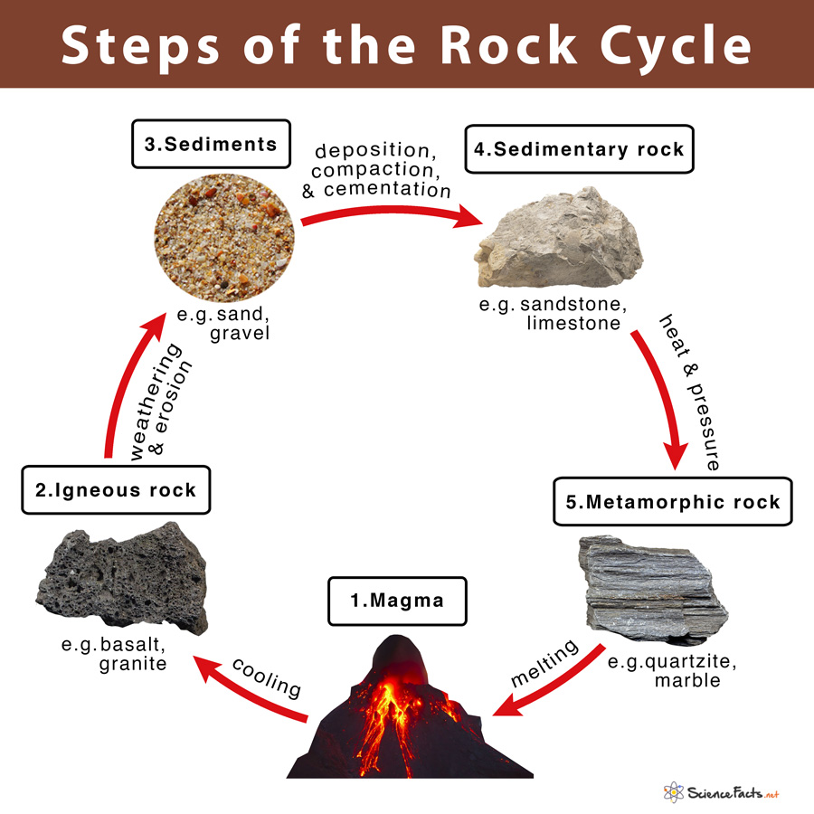

Volcano
When pressure builds or magma it finds a pathwways to exit the Earth's crust and it erupts as lava, creating a volcano.
Extrusive Rocks
It refers to the mode of igneous volcanic rock formation in which hot magma from inside the Earth flows out (extrudes) onto the surface as lava or explodes violently into the atmosphere to fall back as pyroclastics or tuff.
In contrast, intrusive rock refers to rocks formed by magma which cools below the surface.

A rock is a naturally occuring solid substance composed of minerals that forms the building blocks of Earth's crust
and are formed through geological processes over long periods of time.
What are rocks made?
Rocks can be made up of one or more minerals, which are naturally occuring inorganic substances with specific chemical
compositions and crystalline structures.

Igneous rocks are formed from the solidifcation of magma or lava beneath or at the surface of the Earth.
Examples of Igneous Rocks:

Sediments is a solid material that is transported to a new location where it is deposited. It occurs naturally and, through the processes of weathering and erosion, is broken down and subsequently
transported by the action of wind, water, or ice or by the force of gravity acting on the particles.
Examples of Sediments:

Sedimentary Rocks are types of rock formed by the cementation of sediments. It can be particles of minerals or organic matter.
that have been accumulated or deposited at Earth's surface.
Examples of Sedimentary Rocks:

Metamorphic rocks arise from the transformation of existing rock to new types of rock in a process called metamorphism Metamorphic
rocks make up a large part of the Earth's crust and form 12% of the Earth's land surface.
Examples of Metamorphic Rocks:

References: